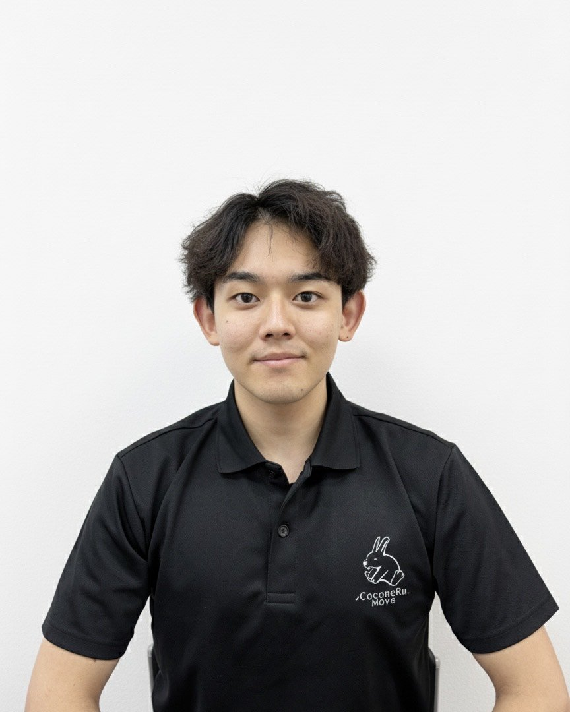
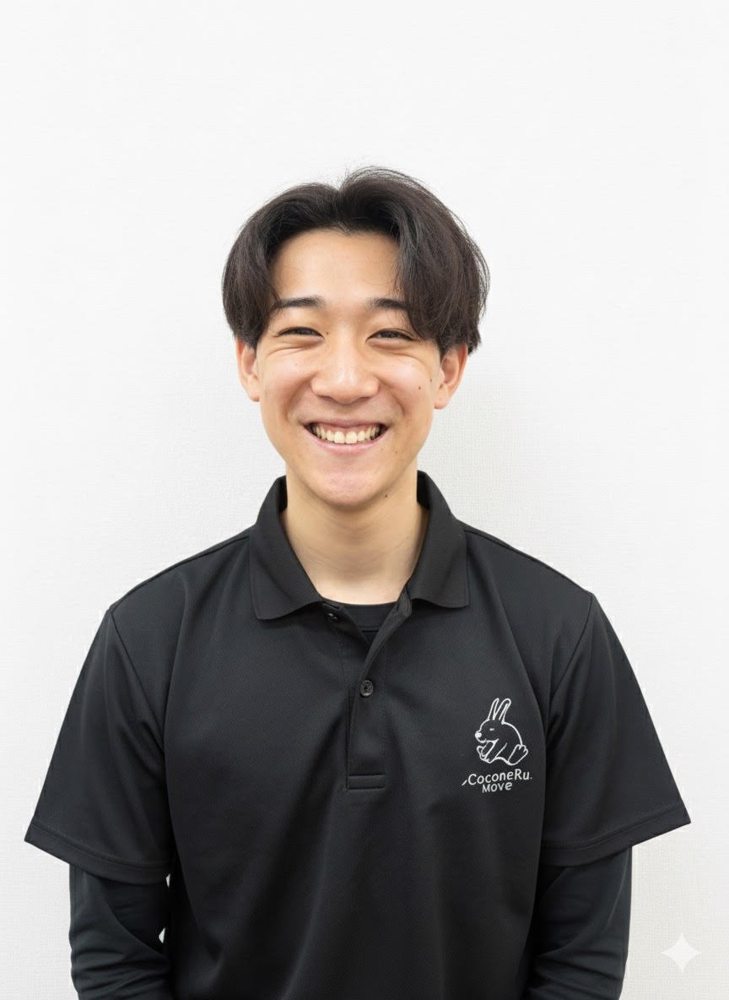

Personal Conditioning
斎藤 嶺吏
サイトウ レイリ
接骨院での勤務経験とスポーツ現場でのサポート経験をもとに、身体の癖を見極めながら、動きやすい状態へ整えます。
Team
身体の状態を見極め、無理なく続けられるコンディショニングを支えます。
Move Team
CoconeRu. Moveでは、柔道整復師の視点で身体の状態を見極め、整体・ストレッチ・ピラティスをその日の目的に合わせて組み立てます。

Personal Conditioning
サイトウ レイリ
接骨院での勤務経験とスポーツ現場でのサポート経験をもとに、身体の癖を見極めながら、動きやすい状態へ整えます。

Training / Stretch
ミツダ コウキ
トレーニングとストレッチを組み合わせ、無理なく続けられる身体づくりをサポートします。初めての方でも相談しやすい雰囲気を大切にしています。